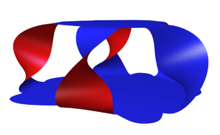

2018-2019 Ithaca High School maths seminar 2: Introduction to Knot Theory
Instructor: Hannah Keese
hkeese at math dot ubc dot ca
Notes for the class:
Notes
Computing the Alexander polynomial using Seifert surfaces
Projects
A list of possible projects can be found here
Computing the Jones polynomial
Jack Greenberg, Alex Mueller and Jeffrey Lantz wrote a program that computes the Jones polynomial for knots and links given a braid word, and visualises complete resolutions of knots.
You can find their program here.
Seifert surfaces
Zoë Marschner, Dora Kassabova and Kasia Fadeeva learnt about Seifert surfaces and knot invariants that are computed from them. As part of this project, they wrote a program that draws a Seifert surface given a user-drawn knot. It also computes the genus of the surface and the Alexander polynomial of the given knot.
You can find their program here.
Here is their output for the knot 5_1:
-
